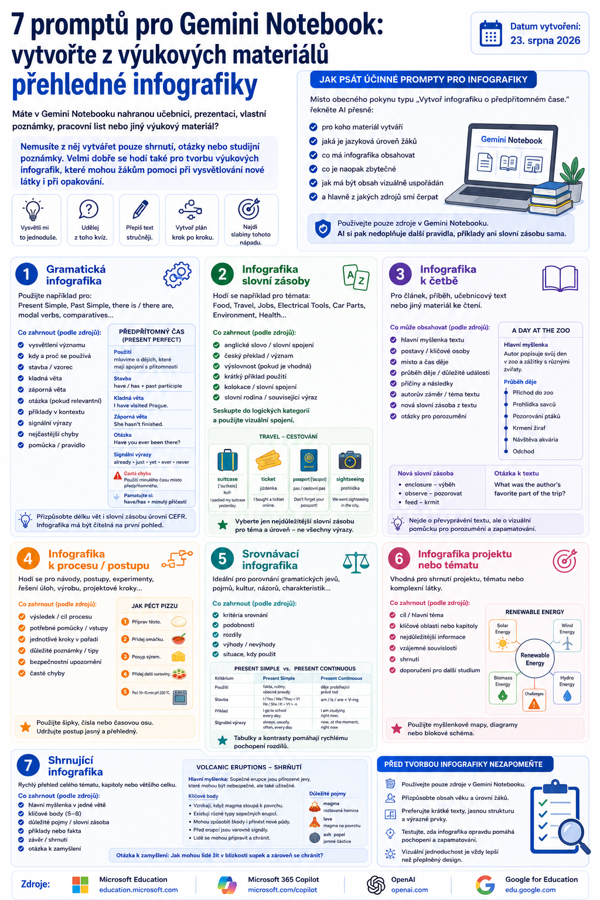

Jak z učebnic, prezentací, poznámek a dalších materiálů vytvořit přehledné výukové infografiky.
Gemini NotebookAngličtinaInfografiky
Praktický návod
Z materiálů k výukové infografice
Gemini Notebook nemusí připravovat jen shrnutí nebo otázky. Při práci s vlastními zdroji může vytvořit i vizuální pomůcku, která žákům pomůže nové učivo pochopit a zopakovat.
7 promptůPouze zdroje notebookuVýuka angličtiny
Pokud máte v Gemini Notebooku vlastní výukové materiály, můžete z nich připravit infografiku pro gramatiku, slovní zásobu, četbu, poslech, psaní, mluvení i celou lekci.
7 promptů pro Gemini Notebook: vytvořte z výukových materiálů přehledné infografiky
Máte v Gemini Notebooku nahranou učebnici, prezentaci, vlastní poznámky, pracovní list nebo jiný výukový materiál?
Nemusíte z něj vytvářet pouze shrnutí, otázky nebo studijní poznámky. Velmi dobře se hodí také pro tvorbu výukových infografik, které mohou žákům pomoci při vysvětlování nové látky i při opakování.
Místo obecného pokynu:
„Vytvoř infografiku o předpřítomném čase.“
je ale lepší AI přesně říct:
pro koho materiál vytváří,
jaká je jazyková úroveň žáků,
co má infografika obsahovat,
co je naopak zbytečné,
jak má být obsah vizuálně uspořádán,
a hlavně z jakých zdrojů smí čerpat.

Sedm typů výukových infografik, které lze připravit z vlastních zdrojů v Gemini Notebooku.
Právě poslední bod je důležitý. Pokud máme v Gemini Notebooku nahranou například konkrétní učebnici, můžeme požadovat, aby infografika vycházela pouze z tohoto materiálu a AI si nedoplňovala další pravidla, příklady nebo slovní zásobu sama.
Níže najdete sedm univerzálních promptů pro výuku angličtiny.
Stačí vždy změnit údaje v hranatých závorkách.
1. Gramatická infografika
Použijte například pro Present Simple, Past Simple, there is / there are, modal verbs, comparatives nebo jiný gramatický jev.
Prompt
Vystupuj jako zkušený učitel angličtiny a odborník na didaktický a vizuální design.
Na základě POUZE zdrojů uložených v tomto Gemini Notebooku vytvoř přehlednou, vizuálně atraktivní a didakticky správnou výukovou infografiku na téma:
[TÉMA GRAMATIKY]
Cílová skupina:
[TYP ŽÁKŮ – např. žáci střední školy / teenageři]
Jazyková úroveň:
[CEFR – např. A1, A2, B1]
Jazyk infografiky:
[JAZYK – např. vysvětlení česky, anglické příklady anglicky]
Infografika má žákům pomoci gramatický jev rychle pochopit, zapamatovat si jej a později zopakovat.
Zpracuj pouze informace doložené ve zdrojích.
Pokud některá informace ve zdrojích není, nevymýšlej ji a raději ji vynech.
Zahrň podle dostupných zdrojů:
- jednoduché vysvětlení významu gramatického jevu,
- kdy a proč se používá,
- základní stavbu nebo vzorec,
- kladnou větu,
- zápornou větu,
- otázku, pokud je relevantní,
- několik krátkých příkladů v přirozeném kontextu,
- typické signální výrazy, pokud jsou ve zdrojích,
- nejčastější chyby žáků, pokud je zdroje uvádějí,
- krátkou pomůcku nebo pravidlo k zapamatování, pouze pokud vychází ze zdrojů.
Přizpůsob délku vět i slovní zásobu zadané úrovni CEFR.
Používej krátké textové bloky, výrazné nadpisy, tabulky, šipky, symboly nebo jednoduchá vizuální schémata tam, kde pomohou porozumění.
Důležité pravidlo zvýrazni vizuálně.
Nevytvářej dlouhé odstavce.
Infografika musí být čitelná na první pohled a nesmí působit přeplněně.
Preferuj přibližně 5–8 hlavních obsahových bloků.
Nevkládej žádná pravidla, příklady ani výjimky, které nejsou podloženy zdroji tohoto notebooku.
2. Infografika slovní zásoby
Hodí se například pro témata Food, Travel, Jobs, Electrical Tools, Car Parts, Environment nebo Health.
Prompt
Vystupuj jako zkušený učitel angličtiny, specialista na výuku slovní zásoby a didaktický design.
Na základě POUZE zdrojů uložených v tomto Gemini Notebooku vytvoř výukovou infografiku na téma:
[TÉMA SLOVNÍ ZÁSOBY]
Cílová skupina:
[TYP ŽÁKŮ]
Jazyková úroveň:
[CEFR]
Jazyk infografiky:
[JAZYK VÝSTUPU]
Vyber pouze nejdůležitější slovní zásobu pro zadané téma a úroveň.
Nepokoušej se do infografiky umístit všechna slova ze zdrojů.
Upřednostni výrazy, které jsou pro pochopení tématu a praktickou komunikaci nejdůležitější.
U jednotlivých výrazů podle dostupných zdrojů uveď:
- anglické slovo nebo slovní spojení,
- stručný význam nebo český překlad,
- podporu výslovnosti, pokud je vhodná a doložená,
- krátký příklad použití,
- užitečnou kolokaci nebo slovní spojení,
- případně slovní rodinu nebo související výraz.
Seskup slovní zásobu do logických kategorií.
Pokud je to vhodné, použij vizuální spojení slova s předmětem, činností nebo situací.
Příklady musí odpovídat zadané jazykové úrovni.
Používej krátké texty a silnou vizuální hierarchii.
Infografika má sloužit jako rychlá studijní pomůcka, nikoli jako slovník.
Nevytvářej dlouhé seznamy.
Nevkládej slovní zásobu, definice, překlady, kolokace ani příklady, které nejsou podloženy zdroji notebooku.
3. Infografika k četbě
Tento prompt lze použít k článku, příběhu, učebnicovému textu nebo jinému materiálu určenému ke čtení.
Prompt
Vystupuj jako zkušený učitel angličtiny a odborník na rozvoj čtenářských dovedností.
Na základě POUZE zdrojů uložených v tomto Gemini Notebooku vytvoř přehlednou výukovou infografiku k:
[NÁZEV TEXTU / TÉMA TEXTU]
Cílová skupina:
[TYP ŽÁKŮ]
Jazyková úroveň:
[CEFR]
Jazyk infografiky:
[JAZYK VÝSTUPU]
Cílem není text pouze převyprávět.
Vytvoř vizuální studijní pomůcku, která žákům umožní rychle pochopit jeho strukturu a nejdůležitější informace.
Podle zdrojů zobraz:
- hlavní myšlenku textu,
- 3–6 nejdůležitějších bodů,
- důležité podpůrné informace,
- osoby, místa nebo události, pokud jsou podstatné,
- vztahy mezi jednotlivými myšlenkami,
- klíčovou slovní zásobu potřebnou k porozumění textu,
- případně časovou osu, proces nebo příčiny a následky, pokud se pro daný text hodí.
Rozliš vizuálně hlavní informace od detailů.
Používej hesla, krátké věty, šipky, časovou osu, diagram nebo jiné vhodné vizuální prvky.
Přizpůsob jazyk zadané úrovni CEFR.
Nevytvářej interpretace, které nejsou doloženy textem.
Nepřidávej informace, slovní zásobu ani vysvětlení z jiných zdrojů.
4. Infografika k poslechu
Využít ji lze například k nahrávce z učebnice, rozhovoru, podcastu nebo videu, pokud jsou potřebné informace součástí zdrojů notebooku.
Prompt
Vystupuj jako zkušený učitel angličtiny a odborník na rozvoj poslechových dovedností.
Na základě POUZE zdrojů uložených v tomto Gemini Notebooku vytvoř přehlednou výukovou infografiku k:
[TÉMA / POSLECHOVÝ MATERIÁL]
Cílová skupina:
[TYP ŽÁKŮ]
Jazyková úroveň:
[CEFR]
Jazyk infografiky:
[JAZYK VÝSTUPU]
Infografika má žákům pomoci pochopit a následně si zopakovat obsah poslechu.
Podle dostupných zdrojů zobraz:
- hlavní téma nebo myšlenku,
- nejdůležitější informace,
- klíčové detaily,
- jednotlivé mluvčí a jejich role nebo názory, pokud jsou relevantní,
- vztahy mezi informacemi,
- důležitou slovní zásobu a výrazy,
- případně pořadí událostí nebo jednotlivé fáze rozhovoru.
Pokud je materiál dialogický, můžeš použít jednoduché vizuální rozdělení podle jednotlivých mluvčích.
Nepřepisuj celý poslech.
Vyber pouze informace důležité pro pochopení.
Používej krátké textové bloky a jasnou vizuální hierarchii.
Přizpůsob jazyk zadané úrovni CEFR.
Nevytvářej domněnky o názorech nebo záměrech mluvčích, pokud nejsou doloženy zdrojem.
Nepřidávej informace, slovní zásobu ani interpretace, které ve zdrojích nejsou.
5. Infografika k psaní
Velmi dobře funguje například pro email, formal letter, description, story, opinion essay, CV nebo invitation.
Prompt
Vystupuj jako zkušený učitel angličtiny a odborník na výuku písemného projevu.
Na základě POUZE zdrojů uložených v tomto Gemini Notebooku vytvoř výukovou infografiku pro:
[TYP TEXTU / SLOHOVÝ ÚTVAR]
Cílová skupina:
[TYP ŽÁKŮ]
Jazyková úroveň:
[CEFR]
Jazyk infografiky:
[JAZYK VÝSTUPU]
Infografika má fungovat jako praktická pomůcka, podle které dokáže žák daný text naplánovat a napsat.
Podle dostupných zdrojů zobraz:
- účel daného typu textu,
- komu je text určen,
- základní strukturu,
- doporučené pořadí jednotlivých částí,
- charakteristické jazykové prvky,
- užitečné fráze a větné vzorce,
- krátké modelové příklady,
- případně kontrolní body před odevzdáním textu.
Strukturu znázorni vizuálně, například jako jednotlivé části textu, kroky nebo jednoduchou šablonu.
Užitečné fráze rozděl podle jejich funkce, například:
- zahájení,
- vyjádření názoru,
- spojování myšlenek,
- ukončení.
Používej pouze takové jazykové prostředky, které odpovídají zadané úrovni CEFR a jsou doloženy zdroji.
Nevytvářej celý dlouhý vzorový text, pokud není součástí zdroje.
Infografika má být praktická, stručná a použitelná při samotném psaní.
Nepřidávej jazykové konvence, fráze ani pravidla, která nejsou ve zdrojích notebooku.
6. Infografika k mluvení
Použijte ji například k tématům At a restaurant, Shopping, Introducing yourself, Job interview, Asking for directions nebo My family.
Prompt
Vystupuj jako zkušený učitel angličtiny se zaměřením na praktickou komunikaci.
Na základě POUZE zdrojů uložených v tomto Gemini Notebooku vytvoř přehlednou výukovou infografiku pro komunikační situaci:
[TÉMA MLUVENÍ]
Cílová skupina:
[TYP ŽÁKŮ]
Jazyková úroveň:
[CEFR]
Jazyk infografiky:
[JAZYK VÝSTUPU]
Infografika má žákovi pomoci skutečně promluvit, nikoli pouze vysvětlit teorii.
Podle zdrojů vyber:
- nejdůležitější slovní zásobu,
- užitečné fráze,
- otázky,
- možné odpovědi,
- funkční jazyk pro danou situaci,
- jednoduché konverzační vzorce,
- krátké modelové výměny replik,
- případně strategie, jak požádat o zopakování, vysvětlení nebo čas na rozmyšlenou.
Uspořádej obsah podle průběhu skutečné komunikační situace.
Pokud se to hodí, vytvoř jednoduchý model:
1. Jak rozhovor začít
2. Co říci během rozhovoru
3. Jak reagovat
4. Jak rozhovor ukončit
Modelové věty musí odpovídat zadané jazykové úrovni.
Preferuj krátké, přirozené a prakticky použitelné věty.
Nevytvářej dlouhé dialogy.
Infografika musí být snadno použitelná jako opora při mluvení ve dvojici nebo skupině.
Nepřidávej fráze, dialogy ani komunikační strategie, které nejsou podloženy zdroji notebooku.
7. Infografika celé lekce
Tento prompt je užitečný například tehdy, když máte v Gemini Notebooku materiály k celé lekci z učebnice a chcete z nich vytvořit jednostránkový přehled pro žáky.
Prompt
Vystupuj jako zkušený učitel angličtiny a odborník na instructional design.
Na základě POUZE zdrojů uložených v tomto Gemini Notebooku vytvoř jednostránkovou výukovou infografiku shrnující lekci:
[TÉMA / NÁZEV LEKCE]
Cílová skupina:
[TYP ŽÁKŮ]
Jazyková úroveň:
[CEFR]
Jazyk infografiky:
[JAZYK VÝSTUPU]
Cílem je vytvořit vizuální „mapu lekce“, kterou může žák použít při opakování.
Nezpracovávej každý detail.
Vyber pouze obsah, který je pro pochopení a zapamatování lekce zásadní.
Podle dostupných zdrojů zahrň:
- hlavní cíl lekce,
- nejdůležitější slovní zásobu,
- hlavní gramatický nebo jazykový jev,
- klíčové fráze,
- důležité příklady,
- případně hlavní informace z četby nebo poslechu,
- praktickou komunikační situaci,
- několik hlavních bodů „Co si mám z této lekce pamatovat?“.
Uspořádej obsah do jasně oddělených vizuálních bloků.
Vizuálně odliš:
- Vocabulary
- Grammar
- Useful English
- Remember
- Examples
Použij pouze ty části, které mají oporu ve zdrojích.
Přizpůsob množství informací zadané úrovni CEFR.
Preferuj hesla, krátké věty, příklady a vizuální prvky před dlouhými odstavci.
Pokud by bylo informací příliš mnoho, raději méně důležité části vynech.
Infografika musí být pochopitelná i při samostatném opakování žáka.
Nepřidávej žádné informace, vysvětlení ani příklady, které nejsou doloženy zdroji tohoto notebooku.
Malý trik: upravte poslední řádek podle svých žáků
Stejný prompt nemusí dát stejný typ infografiky pro každou třídu. Na jeho konec můžete přidat například:
Pro začátečníky
Žáci jsou začátečníci. Používej maximálně krátké věty a jednoduchou slovní zásobu. Nevysvětluj jeden pojem pomocí dalšího obtížného anglického pojmu.
Pro české žáky
Vysvětlení a instrukce piš česky. Cílovou anglickou slovní zásobu, fráze a modelové věty ponechávej v angličtině.
Pro žáky se SPU
Minimalizuj množství souvislého textu. Používej krátké bloky, jasné členění, dostatek vizuálního prostoru a zvýrazni pouze skutečně důležité informace. Nevkládej dekorativní prvky, které neslouží porozumění.
Pro tisk
Navrhni infografiku jako přehledný jednostránkový materiál vhodný k tisku na A4. Text musí zůstat dobře čitelný i po vytištění.
Proč jsou tyto prompty přesnější?
Největší rozdíl není v tom, že jsou delší.
Rozdíl je v tom, že AI dostává didaktické mantinely.
Neříkáme jí pouze, co má vytvořit. Říkáme jí také:
podle jakých zdrojů má pracovat,
pro koho materiál vzniká,
co je důležité,
co má vynechat,
jak složitý jazyk může používat,
kolik informací přibližně zobrazit,
a k čemu má výsledný materiál žákovi sloužit.
To je při tvorbě výukových materiálů zásadní.
Krásná infografika totiž ještě nemusí být dobrá výuková pomůcka.
Cílem není zaplnit stránku co největším množstvím informací. Dobrá infografika má žákovi během několika sekund ukázat:
Co je důležité? Jak spolu informace souvisejí? A co si z toho mám zapamatovat?
Právě v tom může být Gemini Notebook pro učitele velmi užitečný.
Další praktické návody
Další postupy, které pomáhají učitelům používat AI při přípravě a práci se žáky.